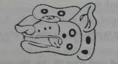
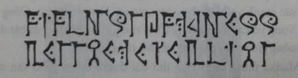

Jake leo qua những con dốc khúc khuỷu, men theo đường mòn dẫn lên vách núi. Marika dẫn đường. Pindor canh chừng phía sau, luôn miệng nhắc mọi người di chuyển trật tự để không làm mấy con thú khác để ý. Cả bọn hối hả đi; thế nên chẳng còn dư tí thời gian nào để hỏi han nữa.
Nhưng Jake vẫn tìm cách để nhìn rõ hơn sợi dây chuyền ngọc bích của Marika. Trên đó có khắc một biểu tượng.

Không thể nhầm lẫn được. Chắc chắn là đồ của người Maya. Biểu tượng ấy gọi là balam, nghĩa là báo đốm, nhìn cũng hao hao một con thú hoang họ mèo. Hơn nữa, Marika còn đang mặc áo thêu của người Maya, hệt như cái áo mẹ Jake đem về từ Trung Mỹ. Ngay làn da con bé cũng ngăm ngăm như màu nước trà mỗi sáng mẹ vẫn uống, lúc nào cũng cho thêm một cục kem sữa.
Chẳng lẽ con bé này là người Maya?
Còn Pindor thì sao? Jake cũng quan sát kỹ kiểu đôi xăng đan và cách thiết kế mũi mác bằng đồng. Tất cả đều theo kiểu La Mã, có thể là vào khoảng thế kỷ thứ hai trước Công nguyên. Ngay cả mái tóc dài, xén ngang trước trán cũng giống như một ông Caesar xưa xửa xừa xưa nào đó.
Người Maya, người La Mã và những con T-rex. Chuyện gì đang xảy ra vậy nhỉ?
Băng thêm hai khúc quanh nữa thì mỏm đá đã hiện ra sừng sững phía trước mặt. Có một lối đi nhỏ băng ngang qua hai tòa tháp canh khổng lồ, cao chừng mười tầng lầu, xây toàn bằng đá. Một mái vòm được xây để nối hai tòa tháp lại với nhau, nhưng nó đã bị sập mất, chỉ còn chừa lại hai đầu cụt lủn. Hình như chỗ này đã bị bỏ phế từ lâu.
“Cổng Vỡ", Marika thuyết minh.
Lúc cả bọn tiến về phía lối vào, Jake nhận ra mấy viên gạch xây cổng màu huyết dụ lỗ chỗ chính là đá núi lửa.
Jake đâm sầm vào Marika vì con bé đột nhiên dừng lại. Một tiếng rít kỳ quái chen ngang tiếng rỉ rả liên hồi của lũ sâu bọ. Tiếng rít nọ vọng xuống từ trên không, nghe giông giống tiếng heo bị chọc tiết. Marika quay lại, mắt trợn trừng kinh hoàng, nhỏ tỏ vẻ sợ hãi còn hơn cả khi bị con T-rex truy đuổi.
Jake cũng quay lại nhìn, Pindor và Kady thì ngần ngại đứng nguyên. Trên trời cao, một sinh vật to lớn đang bay lượn với đôi cánh da. Thoạt nhìn, Jake nghĩ đó là một con thần lằn cánh; cũng là một loài thú ăn thịt như khủng long bạo chúa tyrannosaurus. Nhưng nhìn kỹ thì không phải. Đôi cánh gắn chặt với cái thân hình gầy đét chỉ có da và xương. Khi nó lướt qua, Jake thoáng thấy bốn chi và cái đầu trọc lóc nhô lên một cái mào cứng.
Jake rùng mình, cậu cảm thấy con vật này có gì đó thật bất thường. Con vật cũng gợi ra trong cậu một điều gì đó... điều gì mà cậu đã từng thấy.
“Con grakyl!” Marika thét lên, vừa ngờ vực vừa kinh hoàng. Nhỏ đảo mắt khỏi bầu trời, đăm đăm dò xét Jake. Lần đầu tiên, Jake thấy sự ngờ vực trên mặt nhỏ. Nhưng rổi sự ngờ vực biến mất, nhường chỗ cho nỗi lo sợ. “Chạy đến cổng ngay! Đó là cơ hội duy nhất của chúng ta!"
Marika co chân chạy, trong lúc một tiếng rít khác vang lên như xé toang bầu trời.
Jake chạy theo, nhưng cậu vẫn liên tục quan sát. Phía trên kia, con vật vừa đảo cánh quay lại. Jake cảm thấy cái nhìn lạnh băng soi mói của nó trên đầu. Con vật lại rít lên, xếp cánh và chuẩn bị bổ nhào xuống. Con ác thú đã phát hiện ra bọn cậu.
Marika chạy hết tốc lực trên con đường mòn sỏi đá dẫn lại lối vào. Ngọn tháp canh bằng đá đang chờ phía trước. Jake đuổi theo con bé, Pindor và Kady bám theo sát gót.
Khi cả bọn đến gần những ngọn tháp canh, da thịt Jake tự nhiên đau nhói; cứ như thể hàng ngàn con nhện đang rần rần trên da thịt. Càng chạy lại gần, cảm giác đó càng mãnh liệt hơn và bây giờ thì cảm giác đó bắt đầu thiêu đốt khắp người cậu. Cậu bối rối giẫm phải hòn đá chông chênh rồi trượt chân ngã.
“Mari!” Pindor gọi với lên phía trước.
Cô bé Maya quay đầu ra sau và thấy Jake ngã. Nhỏ với tay, nắm chặt lấy cổ tay cậu. Nhỏ này vừa chạm vào cậu thì cảm giác đau đớn như bị thiêu đốt ấy tan biến, nhưng Jake vẫn cảm thấy một luồng diện và một thứ áp lực kì lạ lởn vởn trong không khí. Cậu để mặc cho con bé kéo mình đến Cổng Vỡ, tiến vào trong bóng râm của tòa tháp. Marika đỡ cậu thêm vài bước nữa, và rồi áp lực bỗng dưng tan biến mất. Cậu quay người lại, thấy Pindor cũng đang ghì chặt khuỷu tay chị mình dẫn qua cánh cổng.
Con vật rít lên; sà xuống và lượn vòng bên dưới cổng vòm đã sập. Jake thụp đầu xuống, nhưng con vật bỗng đột ngột dừng phắt lại. Con vật bị dính chặt vào cổng vòm, quằn quại đau đớn giữa không trung như một con côn trùng bị kẹt trên vỉ. Toàn thân nó bắn ra tia gì đó. Hình như có một thứ trường lực cản nó lại.
Jake lùi lại một chút để nhìn rõ con vật hơn. Hai chi đầy vuốt sắc giãy giụa. Những cái cựa sắc như dao cạo tô điểm cho gối và khuỷu chân. Nhưng cái mặt của nó mới khinh khủng hơn cả... không phải vì cái mũi phình to và cái mõm đầy nanh nhọn, mà là vì nó có nét gì đó quá “người”. Jake thấy đôi mắt đang quằn quại đau đớn của nó ánh lên tia thông minh. Nó nhìn chăm chăm vào Jake, như thể đã nhận ra Jake.
Con quái vật rít lên một tiếng cuối cùng, vùng vẫy cố thoát khỏi sức mạnh vô hình đang kìm giữ nó. Nó cố rứt khỏi Cổng Vỡ, tuyệt vọng vỗ cánh như điên. Cuối cùng, có vẻ như nó đã bắt được một luồng gió và lảo đảo bay về phía rừng già.
Marika đứng cạnh Jake thở dài thườn thượt. Nhỏ vẫn nhìn theo, để chắc rằng con thú thật sự đã bỏ cuộc. Cuối cùng, con bé quay đi. “Một con grakyl” nó lẩm bẩm. Nỗi khiếp sợ vẫn phảng phất trong giọng nói, nhưng bây giờ giọng nhỏ còn có lẫn thêm chút hoan hỉ và một chút kinh ngạc. “Tớ chưa bao giờ thấy tụi grakyl trước đây... chỉ toàn thấy trong những hình vẽ... nghe người ta kể lại.
“Nhưng nó là cái quái gì mới được chứ?”, Kady hỏi, cố gắng đẩy câu chuyện đi xa hơn.
Marika hình như cuối cùng cũng nhận ra nhỏ vẫn đang nắm tay Jake. Nó rút tay lại.
Pmdor nhỏ giọng thầm thì trả lời câu hỏi của Kady, mắt vẫn hướng lên trời, “Grakyl là những con ác thú bị nguyền rủa của Kalverum Rex. Chúa Sọ. Chúng là nô lệ của lão. Chúng...”
Marika cắt ngang, “Chúng ta phải đi thôi. Mặt trời sắp lặn rồi.” Jake xoa xoa cổ tay, chỗ Marika đã nắm ban nãy. Cậu nhớ lại cảm giác đau đớn như kim chích lúc đến gần Cổng Vỡ. Jake có cảm giác lúc nãy nếu Marika không chộp lấy tay thì cậu cũng đã như con vật đó, không có cách gì đi qua dược.
Chẳng lẽ đó là một bức tường vô hình? Một cách phòng thủ, bằng cách không cho bất cứ thứ gì vượt qua? Jake nhìn kĩ cái tháp canh. Những viên đá nọ có vẻ chính là đá núi lửa, nhưng dường như không hề có vôi vữa gì kết dính chúng lại với nhau. Chúng được xếp khít vào nhau theo một kiểu phức tạp, một thứ trò chơi xếp hình bằng đá. Jake cũng để ý thấy mấy dòng chữ mờ mờ trên những dải băng dọc tháp canh.

Thứ chữ viết này không giống với bất cứ thứ ngôn ngữ nào Jake biết. Nhưng cậu chưa kịp nhìn kỹ thì Marika đã dẫn cả bọn hướng xuống con đường mòn rời khỏi Cổng Vỡ.
Qua khỏi hai tòa tháp canh, một thung lũng rộng lớn mở ra trước mắt. Những vách đá dốc đứng bao quanh thung lũng, tạo thành một vòng tròn khép kín. Thung lũng trông như một cái hố thiên thạch, nhưng Jake quan sát thấy có mấy lỗ thông nằm rải rác phía rìa, bốc lên mù mịt khí lưu huỳnh.
Không, cái lòng chảo này không phải hố thiên thạch.
Thung lũng này chính là một miệng núi lửa khổng lồ. Và không hề trống rỗng.
"Dưới đó là đâu vậy?” Kady cuối cùng cũng cất tiếng hỏi.
Jake cũng thắc mắc điều tương tự trong lúc đang cố gắng hiểu cho ra mọi điều cậu đang thấy. Dưới xa kia, một vùng lòng chảo rộng lớn đã được dọn sạch cây cối. Vùng đất trải rộng, mênh mông những cánh đồng và vườn cây ăn trái. Vùng đất rộng bao quanh thành phố lô nhô những tòa nhà bằng đá và những túp lều gỗ.
Nhìn từ xa, dường như thành phố này chẳng được sắp xếp theo bố cục nào cả. Bên này là tòa lâu đài thời Trung cổ; còn bên kia lại là dãy nhà lọt thỏm trong vách núi, nhìn giống như mấy cái nhà Jake đã từng tham quan ở sa mạc New Mexico. Và giữa quảng trường thành phố kia có phải là một cây cột Ai Cập không nhỉ? Nhìn nó giống đài kỷ niệm Washington thu nhỏ nhưng trên đỉnh lại có một con bọ hung bằng đá, một biểu tượng Ai Cập cổ, nghĩa là mặt trời đang mọc. Thật là vô lý.
“Calypsos,” Marika tự hào nói. "Nhà của chúng tôi."
Con bé bước xuống con đường nhỏ trải sỏi thoai thoải dốc.
“Khoan đã,” Jake nói, cậu cố tìm lời lẽ diễn tả sự bối rối của mình, “Làm thế nào... Ở đâu...?”
Pindor đi theo sau Marika. “Hai bạn sẽ được giải đáp mọi chuyện ở Calypsos.” Lời nói của thằng bé gần như là một lời đe dọa.
"Chờ đã", Jake tiếp tục, phải biết được một thứ gì đó chứ, bất cứ điều gì. “Bạn là người La Mã phải không?”
Thẳng bé căng thẳng cái áo toga ra. “Tất nhiên rồi. Bạn nghi ngờ gì nguồn gốc tôi sao?"
“Không, không...” Jake vội quay sang đứa con gái. “Còn Marika bạn là người Maya phải không?”
Gật đầu. “Mười lăm thế hệ trước bộ lạc mình đã đến đây. Còn gia tộc Pindor thì đã đến đời thứ mười sáu rồi. Nhưng những tộc người lưu lạc khác còn ở đây lâu hơn nữa. Rất rất nhiều.”
Con bé lại bước xuống. Jake nhìn theo nó. Những tộc người lưu lạc ư?
Cậu lại quan sát Calypsos lần nữa. Còn kiểu lợp mái cỏ này là kiểu nhà dài Viking phải không nhỉ? Còn những ngôi nhà sàn kia thì sao? Chúng trông như nhà ở châu Phi. Jake không chắc lắm. Dù gì đi nữa, dường như toàn bộ lịch sử đang tập trung hết bên dưới đó, tất cả các tộc người cổ đại từ mọi thời đại và mọi vùng đất. Nhưng bằng cách nào... và tại sao?
Jake háo hức tìm hiểu kĩ hơn, chứ không như chị cậu.
Kady vẫn lững thững đằng sau. Mắt Kady nheo lại đầy những âu lo và hoài nghi. “Có lẽ chúng ta không nên đi quá xa,” Kady liếc nhìn về phía hai ngọn tháp đá. “Chúng ta nên ở gần xung quanh chỗ chúng ta đã tới, nếu giả như có đường nào thoát khỏi cái Công viên-kỷ-Jura này.” Jake chỉ nghe chị cậu nói loáng thoáng. Một kiến trúc cuối cùng hoàn toàn hút hồn cậu. Kiến trúc nọ nằm ở phía ngoài của thành phố kì lạ này, nó sừng sững nhô lên khỏi khu vực rừng rậm hoang dại. Thật ra, nó bị rừng che phủ gần như toàn bộ. Do đó mà Jake đã không trông thấy nó ngay từ đầu.
“Chúng ta phải tìm cách trở về nhà,” Kady nói tiếp.
Jake đưa tay trỏ vào kiến trúc lộ diện phân nửa đó. “Bắt đầu tìm kiếm từ chỗ đó thì sao?”
Kady nhìn theo hướng Jake chỉ.
Chỉ có hai đỉnh chóp của cái kim tự tháp là nhô lên khỏi tán rừng, vừa lúc đó Jake nhìn thấy một tượng rồng khổng lồ bằng đá nhô ra trên đỉnh. Mặt trời làm cho nó ánh lên rực rỡ. Con rồng nằm thu mình, cổ vươn dài và đôi cánh dang rộng, như thể nó đang chuẩn bị cất canh. Nó giống hệt con rồng trên đỉnh mô hình kim tự tháp bằng vàng ở viện bảo tàng, cũng hoàn toàn tương ứng với hình phác thảo trong sổ ghi chép của mẹ và những mô tả trong nhật kí hành trình của cha.
Jake lần lên chiếc áo khoác kaki của mình. Cậu đặt tay lên hai quyển sổ nằm gọn ở túi áo trong. Không thể nhầm lẫn được.
Đây chính là cái kim tự tháp đó.
Nhưng là kích thước thật.
Jake kinh ngạc đứng ngây ra.
“Hai bạn có đi không đấy?” Marika bực bội gọi với ra sau.
Jake liếc nhìn Kady. Cậu phải làm sao cho Kady hiểu ra. Cậu siết tay quanh hai quyển sổ giấu trong túi áo. Nếu cái kim tự tháp nhỏ ở bảo tàng bằng cách nào đó đưa chị em cậu đến đây, thì chắc rằng cái kim tự tháp khổng lồ ngoài thung lũng kia đang giữ chìa khóa sẽ mang bọn cậu trở về nhà. Nhưng hơn thế nữa, Jake đã hình dung ra cảnh cha mẹ cậu làm việc ở một lăng mộ nào đó ở Mexico, rồi phát hiện ra cái kim tự tháp nhỏ bằng vàng lúc ban đầu.
Cha mẹ có nghi ngờ gì về một sự thật chăng? Có phải họ đã chết để giữ kín sự thật ấy? Có thể cái kim tự tháp này không chỉ mở ra con đường về nhà mà còn trả lời được cho điều bí ẩn lớn hơn trong cuộc đời Jake, trong cuộc đời cả cha và mẹ cậu.
Chuyện gì đã thật sự xảy đến cho cha mẹ cậu?
Một âm thanh gì đó bỗng rộn lên: tiếng bánh xe lăn, tiếng cãi vã ầm ĩ và tiếng một con thú to lớn nào đó chạy lộp cộp. Pindor lỉnh ra trước do thám chỗ khúc quanh của con đường.
Âm thanh nọ càng lúc càng rõ hơn. Jake có thể nghe ra vài giọng ồm ồm. Bên dưới kia, Pindor giơ ngọn mác lên ra hiệu chào hỏi, rồi đứng sang bên tránh đường.
Hai con vật lộp cộp chạy về hướng bọn nhóc, kéo theo chiến xa hai bánh. Jake nuốt nước bọt, cậu không thể nào tin cảnh tượng đang diễn ra trước mắt. Hai sinh vật kéo xe có màu xanh xám và to bằng những con ngựa bình thường - nhưng chúng không phải là ngựa. Mỗi con ước khoảng nửa tấn, đi bằng bốn chân.
“Europasaurus" Jake gọi tên chúng. "Những con khủng long lùn.”
Ba thanh niên chen chúc trong chiếc xe ngựa: một người cầm dây cương, hai người còn lại lăm lăm mác và kiếm. Một người nhảy xuống; tiến về phía họ. Anh ta ăn mặc hệt như Pinđor, nhưng mặc thêm áo giáp đồng và mũ sắt bên ngoài.
“Heronidus", Marika nói. Con bé khoanh tay, chua chát bảo. “Anh trai Pindor đó.”
Người mới tới nói to, “Cha đang điên tiết lên đấy, Pin! Em làm cái quái gì ở Cổng Vỡ vậy?”
“Tụi em... em định.."
Heronidous chỉ tay. "Thần Jove ơi, đây có phải là ngọn mác của cha không?”
Pindor vội giấu vũ khí sau lưng. Nó liếc nhìn Marika cầu cứu. Heronidus sững người kinh ngạc khi nhìn thấy Jake và Kady. Anh đặt tay lên bao kiếm, rồi vẫy tay gọi mấy người lính La Mã kia, ra hiệu rời khỏi xe.
“Những kẻ xâm phạm...”
Người lính thứ hai rút kiếm ra.
“Ai..?” Heronidus hỏi lớn, gằn giọng trầm xuống cho ra giọng quyền uy. “Các người là ai?”
Pindor bước lên trước và nắm chặt cây mác hơn nữa. “Em nghĩ...” giọng thằng bé đứt quãng. Nó liếc nhìn Jake, rồi nhìn xuống chân. Nó cố trầm giọng xuống cho giống giọng anh nó. “Chúng nó là gián điệp của Kalverum Rex, Chúa Sọ.”